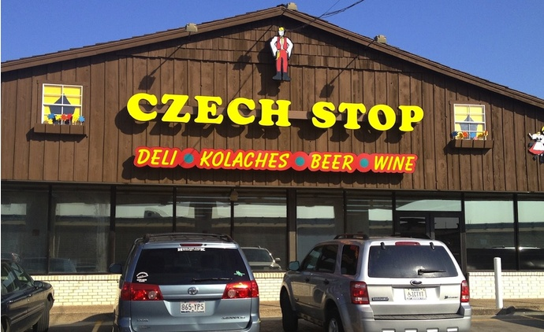

Придорожная заправка с пекарней в Техасе. Здесь продают свежие колачи с разными начинками, которые считаются визитной карточкой этого места.
Подробнее»Du Pain et des Idees
Одна из самых известных ремесленных пекарен Парижа. Основана в 2002 году, занимает историческое здание с расписными потолками. Здесь пекут знаменитый хлеб друзей.
Подробнее»Tatte
Популярная пекарня и кофейня в Бостоне. Свежая выпечка, пироги и сладости каждый день. Сюда приходят на завтрак, кофе и за десертом на вынос.
Подробнее»Demel
Знаменитая венская кондитерская с богатой историей. Здесь подают торты, марципан и шоколадные десерты в старинных залах, как и сотни лет назад.
Подробнее»La Glace
Старейшая кондитерская Копенгагена, работает с XIX века. Славится слоёными пирожными, тортами по семейным рецептам и уютным кафе в центре города.
Подробнее»Czech Stop

Dominique Ansel
Пекарня в Нью-Йорке, известная авторскими десертами. Здесь появился знаменитый крон, гибрид круассана и пончика, из-за которого выстраиваются очереди.
Подробнее»Sadaharu Aoki
Кондитерская в Токио и Париже, соединяющая французскую выпечку и японские вкусы. Особенно известны десерты с чаем маття и чёрным кунжутом.
Подробнее»Tatte
Пекарня и кофейня в Бостоне с большим выбором выпечки. Здесь готовят пироги, хлеб, печенье и сезонные десерты, а к ним подают свежий кофе.
Подробнее»